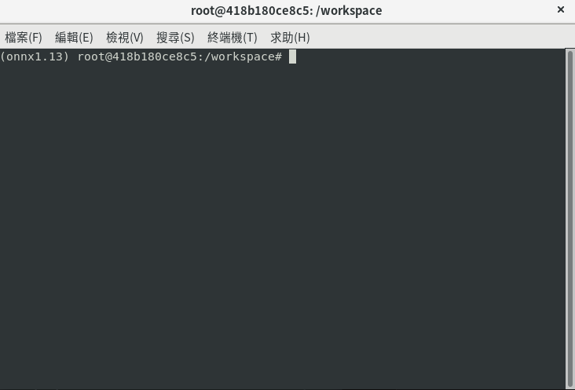

Step-by-Step Guide to YoloV7 End-to-End Deployment¶
yolov7 is a well-known model for performing object detection.
This guide offers a comprehensive guide on how to use our model tools to compile and test the newly downloaded yolov7 model.
The article is divided into two sections:
- Preparing and verifying the AI model for NPU (NEF) on a Linux PC
- Running the AI NPU model (NEF) on KNEO Pi
Preparing and Verifying the AI Model for NPU (NEF) on a Linux PC¶
Step 1: Set up the environment and data¶
-
Step 1-1: Set up the toolchain environment
First, we need to download the latest toolchain Docker image, which includes all the necessary tools for the process.
Start the Docker container with a local folder mounted inside the container.
Install the necessary Python packages.
-
Step 1-2: Clone the model
Navigate to the mounted folder and clone the public Yolov7 model from GitHub https://github.com/WongKinYiu/yolov7 using the following command:
Download
yolov7-tinyweight and convert it to onnx.cd /data1/yolov7 python export.py --weights yolov7-tiny.pt --simplify --topk-all 100 --iou-thres 0.65 --conf-thres 0.35 --img-size 640 640 --max-wh 640 cd /data1The ONNX model will be generated and saved as yolov7/yolov7-tiny.onnx.
-
Step 1-3: Prepare the images for model quantization
We need to prepare some images in the mounted folder. Example input images can be found at https://doc.kneron.com/docs/toolchain/res/test_image10.zip.
Here’s how you obtain it:
Now we have images in foldertest_image10/at/data1, and this is used for quantization.Important
These images are provided as examples. For improved quantization accuracy, users may need to select their own data.
We also require additional images for accuracy testing. However, due to the complexity of the documentation, we are using only one image(
yolov7/inference/images/bus.jpg) in the toolchain Docker for testing purposes.
Step 2: Import KTC and required lib in Python shell (inside docker container)¶
Now, we will go through the entire toolchain flow using the KTC (Kneron Toolchain) Python API in a Python shell.
- run "python" to open the Python shell:

Figure 1. Python shell
- import KTC and other necessary libs:
import os os.chdir('./yolov7') import sys sys.path.append('./') import cv2 import torch import torchvision from numpy import random import numpy as np import onnxruntime as ort from utils.general import non_max_suppression, scale_coords from utils.plots import plot_one_box import glob import os import kneronnxopt import onnx import ktc
Step 3: Convert and optimize the pretrain model¶
We need to first convert the pretrained .pt model to an ONNX model.
ONNX_PATH = "./yolov7/yolov7-tiny.onnx"
m = onnx.load(ONNX_PATH)
md_opt = ktc.onnx_optimizer.onnx2onnx_flow(m)
We now have the optimized ONNX model stored in the variable "md_opt". You can save this ONNX model ('md_opt') to your disk for further inspection, such as using Netron or onnxruntime.
Here we save it to/data1/kneopi_yolov7-tiny_opt.onnx for further verification in Step 5.
Step 4: IP evaluation¶
To ensure the ONNX model functions as expected, it is important to evaluate its performance and check for any unsupported operators or CPU nodes within the model.
km = ktc.ModelConfig(11111, "0001", "730", onnx_model=md_opt)
# npu(only) performance simulation
eval_result = km.evaluate()
print("\nNpu performance evaluation result:\n" + str(eval_result))
You can find the estimated FPS (NPU only) and a detailed report in the kneron_flow/model_fx_report.json and kneron_flow/model_fx_report.html files.
{
"docker_version": "kneron/toolchain:v0.26.0",
"comments": "",
"kdp730/input bitwidth": "int8",
"kdp730/output bitwidth": "int8",
"kdp730/cpu bitwidth": "int8",
"kdp730/datapath bitwidth": "int8",
"kdp730/weight bitwidth": "int8",
"kdp730/ip_eval/fps": "56.4618",
"kdp730/ip_eval/ITC(ms)": "17.7111 ms",
"kdp730/ip_eval/C(GOPs)": "6.86438e+09",
"kdp730/ip_eval/RDMA bandwidth GB/s": "8 GB/s",
"kdp730/ip_eval/WDMA bandwidth GB/s": "8 GB/s",
"kdp730/ip_eval/GETW bandwidth GB/s": "4.5 GB/s",
"kdp730/ip_eval/RV(mb)": 24.1696,
"kdp730/ip_eval/WV(mb)": 18.3712,
"kdp730/ip_eval/cpu_node": "N/A",
"kdp730/kne": "models_730.kne",
"kdp730/nef": "models_730.nef",
"kdp730/bie": "input.kdp730.scaled.release.bie",
"kdp730/onnx": "input.kdp730.graph_opt.onnx",
"gen fx model report": "model_fx_report.html",
"gen fx model json": "model_fx_report.json"
}
The estimated FPS is 56.4618 (for NPU only).
Step 5: Check ONNX model and Pre&Post process are good¶
If we obtain the correct detection result from the ONNX model, along with the proper pre-processing and post-processing, everything should be functioning correctly.
First, we need to review the pre-processing and post-processing methods. You can find the relevant information in the following code: https://github.com/WongKinYiu/yolov7/blob/main/detect.py and https://github.com/WongKinYiu/yolov7/blob/main/models/yolo.py.
Here is the extracted pre-processing method:
import os
os.chdir('./yolov7')
import sys
sys.path.append('./')
from utils.general import non_max_suppression, scale_coords
from utils.plots import plot_one_box
def preprocess(img, model_input_w, model_input_h):
img = cv2.resize(img, (model_input_w, model_input_h)).astype(np.float32)
img = np.transpose(img, (2,0,1))
img /= 255.0
img = np.expand_dims(img, axis=[0])
return img
def post_process(model_inf_data):
pred = []
for o_n in model_inf_data:
pred.append(torch.from_numpy(o_n))
anchors = []
anchors.append([12,16, 19,36, 40,28])
anchors.append([36,75, 76,55, 72,146])
anchors.append([142,110, 192,243, 459,401])
nl = len(anchors) # number of detection layers
grid = [torch.zeros(1)] * nl # init grid
a = torch.tensor(anchors).float().view(nl, -1, 2)
anchor_grid = a.clone().view(nl, 1, -1, 1, 1, 2)
stride = torch.tensor([8. , 16. , 32.])
for idx, every_stride in enumerate(np.array(stride.view(-1, 1, 1)).squeeze()):
anchors[idx] /= every_stride
scaled_res = []
for i in range(len(anchors)):
if grid[i].shape[2:4] != pred[i].shape[2:4]:
bs, _, ny, nx, _ = pred[i].shape
grid[i] = _make_grid(nx, ny).to('cpu')
y = sigmoid(pred[i])
y[..., 0:2] = (y[..., 0:2] * 2. - 0.5 + grid[i]) * stride[i] # xy
y[..., 2:4] = (y[..., 2:4] * 2) ** 2 * anchor_grid[i] # wh
scaled_res.append(y.reshape([bs,-1,85]))
concat_pred = torch.concat(scaled_res,dim=1)
# Apply NMS
batch_det = non_max_suppression(concat_pred, conf_thres=0.25, iou_thres=0.45)
return batch_det
## onnx model check using onnxruntime
im0 = cv2.imread('/data1/yolov7/inference/images/bus.jpg')
# resize and normalize input data
img = preprocess(im0, model_input_w = 640, model_input_h = 640)
# onnx inference using onnxruntime
OPTIMIZED_ONNX_PATH = "/data1/kneopi_yolov7-tiny_opt.onnx"
ort_session = ort.InferenceSession(OPTIMIZED_ONNX_PATH)
model_pred = ort_session.run(None, {'images': img})
# onnx output data processing
batch_det = post_process(model_pred)
det = batch_det[0] #only one image
# visualize segmentation result to img
if len(det):
cls_names = ['person', 'bicycle', 'car', 'motorcycle', 'airplane', 'bus', 'train', 'truck', 'boat', 'traffic light', 'fire hydrant', 'stop sign', 'parking meter', 'bench', 'bird', 'cat', 'dog', 'horse', 'sheep', 'cow', 'elephant', 'bear', 'zebra', 'giraffe', 'backpack', 'umbrella', 'handbag', 'tie', 'suitcase', 'frisbee', 'skis', 'snowboard', 'sports ball', 'kite', 'baseball bat', 'baseball glove', 'skateboard', 'surfboard', 'tennis racket', 'bottle', 'wine glass', 'cup', 'fork', 'knife', 'spoon', 'bowl', 'banana', 'apple', 'sandwich', 'orange', 'broccoli', 'carrot', 'hot dog', 'pizza', 'donut', 'cake', 'chair', 'couch', 'potted plant', 'bed', 'dining table', 'toilet', 'tv', 'laptop', 'mouse', 'remote', 'keyboard', 'cell phone', 'microwave', 'oven', 'toaster', 'sink', 'refrigerator', 'book', 'clock', 'vase', 'scissors', 'teddy bear', 'hair drier', 'toothbrush']
colors = [[random.randint(0, 255) for _ in range(3)] for _ in cls_names]
# Rescale boxes from img_size to im0 size
det[:, :4] = scale_coords(img.shape[2:], det[:, :4], im0.shape).round()
# Write results
for *xyxy, conf, cls in reversed(det):
label = f'{cls_names[int(cls)]} {conf:.2f}'
plot_one_box(xyxy, im0, label=label, color=colors[int(cls)], line_thickness=1)
# Save results (image with detections)
save_path = os.path.abspath("/data1/kneopi_onnxruntime_inf.jpg")
cv2.imwrite(save_path, im0)
print("save result to " + save_path)
kneopi_onnxruntime_inf.png.
Now, we can check the ONNX inference result with ktc API ktc.kneron_inference.
## onnx model check using ktc.inference
im0 = cv2.imread('/data1/yolov7/inference/images/bus.jpg')
# resize and normalize input data
img = preprocess(im0, model_input_w = 640, model_input_h = 640)
# onnx inference using ktc.inference
OPTIMIZED_ONNX_PATH = "/data1/kneopi_yolov7-tiny_opt.onnx"
model_pred = ktc.kneron_inference([img], input_names=['images'], onnx_file=OPTIMIZED_ONNX_PATH, platform=730)
# onnx output data processing
batch_det = post_process(model_pred)
det = batch_det[0] #only one image
# visualize detection result to img
if len(det):
cls_names = ['person', 'bicycle', 'car', 'motorcycle', 'airplane', 'bus', 'train', 'truck', 'boat', 'traffic light', 'fire hydrant', 'stop sign', 'parking meter', 'bench', 'bird', 'cat', 'dog', 'horse', 'sheep', 'cow', 'elephant', 'bear', 'zebra', 'giraffe', 'backpack', 'umbrella', 'handbag', 'tie', 'suitcase', 'frisbee', 'skis', 'snowboard', 'sports ball', 'kite', 'baseball bat', 'baseball glove', 'skateboard', 'surfboard', 'tennis racket', 'bottle', 'wine glass', 'cup', 'fork', 'knife', 'spoon', 'bowl', 'banana', 'apple', 'sandwich', 'orange', 'broccoli', 'carrot', 'hot dog', 'pizza', 'donut', 'cake', 'chair', 'couch', 'potted plant', 'bed', 'dining table', 'toilet', 'tv', 'laptop', 'mouse', 'remote', 'keyboard', 'cell phone', 'microwave', 'oven', 'toaster', 'sink', 'refrigerator', 'book', 'clock', 'vase', 'scissors', 'teddy bear', 'hair drier', 'toothbrush']
colors = [[random.randint(0, 255) for _ in range(3)] for _ in cls_names]
# Rescale boxes from img_size to im0 size
det[:, :4] = scale_coords(img.shape[2:], det[:, :4], im0.shape).round()
# Write results
for *xyxy, conf, cls in reversed(det):
label = f'{cls_names[int(cls)]} {conf:.2f}'
plot_one_box(xyxy, im0, label=label, color=colors[int(cls)], line_thickness=1)
# Save results (image with detections)
save_path = os.path.abspath("/data1/kneopi_tc_onnx_inf.jpg")
cv2.imwrite(save_path, im0)
print("save result to " + save_path)
kneopi_tc_onnx_inf.png.
Note
We are using only one image as an example. It is a good idea to use more data to assess model accuracy.
Step 6: Quantization¶
We identified the preprocessing method in Step 5.
Perform the same steps on our quantization data and add it to a list.
# load and normalize all image data from folder
q_imgs_path = "/data1/test_image10/"
images_list = glob.glob(q_imgs_path+'*'+ '.jpg')
normalized_img_list = []
for img_path in images_list:
img_name = img_path.split("/")[-1]
img = cv2.imread(os.path.join(q_imgs_path, img_name), cv2.IMREAD_COLOR)
model_input_w, model_input_h = 640, 640
img = preprocess(img, model_input_w, model_input_h)
normalized_img_list.append(img)
Then, perform quantization:
# fix point analysis
bie_model_path = km.analysis({"images": normalized_img_list})
print("\nFix point analysis done. Save bie model to '" + str(bie_model_path) + "'")
The bie model will be generated at /data1/kneron_flow/input.kdp730.scaled.release.bie.
Step 7: Check BIE model accuracy is good enough¶
After quantization, the model accuracy is expected to slightly drop. Please check whether the accuracy is good enough to use.
The Toolchain API ktc.kneron_inference can help us to check. The usage of ktc.kneron_inference is similar to Step 4, with the only difference being the second parameter, which is changed from onnx_file to bie_file:
## bie model check using ktc.inference
im0 = cv2.imread('/data1/yolov7/inference/images/bus.jpg')
# resize and normalize input data
img = preprocess(im0, model_input_w = 640, model_input_h = 640)
# bie inference using ktc.inference
BIE_PATH = "/data1/kneron_flow/input.kdp730.scaled.release.bie"
model_pred = ktc.kneron_inference([img], input_names=['images'], bie_file=BIE_PATH, platform=730)
# bie output data processing
batch_det = post_process(model_pred)
det = batch_det[0] #only one image
# visualize segmentation result to img
if len(det):
cls_names = ['person', 'bicycle', 'car', 'motorcycle', 'airplane', 'bus', 'train', 'truck', 'boat', 'traffic light', 'fire hydrant', 'stop sign', 'parking meter', 'bench', 'bird', 'cat', 'dog', 'horse', 'sheep', 'cow', 'elephant', 'bear', 'zebra', 'giraffe', 'backpack', 'umbrella', 'handbag', 'tie', 'suitcase', 'frisbee', 'skis', 'snowboard', 'sports ball', 'kite', 'baseball bat', 'baseball glove', 'skateboard', 'surfboard', 'tennis racket', 'bottle', 'wine glass', 'cup', 'fork', 'knife', 'spoon', 'bowl', 'banana', 'apple', 'sandwich', 'orange', 'broccoli', 'carrot', 'hot dog', 'pizza', 'donut', 'cake', 'chair', 'couch', 'potted plant', 'bed', 'dining table', 'toilet', 'tv', 'laptop', 'mouse', 'remote', 'keyboard', 'cell phone', 'microwave', 'oven', 'toaster', 'sink', 'refrigerator', 'book', 'clock', 'vase', 'scissors', 'teddy bear', 'hair drier', 'toothbrush']
colors = [[random.randint(0, 255) for _ in range(3)] for _ in cls_names]
# Rescale boxes from img_size to im0 size
det[:, :4] = scale_coords(img.shape[2:], det[:, :4], im0.shape).round()
# Write results
for *xyxy, conf, cls in reversed(det):
label = f'{cls_names[int(cls)]} {conf:.2f}'
plot_one_box(xyxy, im0, label=label, color=colors[int(cls)], line_thickness=1)
# Save results (image with detections)
save_path = os.path.abspath("/data1/kneopi_tc_bie_inf.png")
cv2.imwrite(save_path, im0)
print("save result to " + save_path)
You can see the result image kneopi_tc_bie_inf.png.
It is slightly different from Step 1-3, but it looks good enough.
Note
We are currently using only one image as an example. It is a good idea to use more data to check the accuracy.
Step 8: Compile¶
The final step is to compile the BIE model into a NEF model.
# compile
nef_model_path = ktc.compile([km])
print("\nCompile done. Save Nef file to '" + str(nef_model_path) + "'")
You can find the nef file under /data1/kneron_flow/models_730.nef.
The models_730.nef is the final compiled model.
To learn the usage of generated NEF model on KL730, please check example section: KL730End2EndTutorialYoloV7
(Optional) Step 9: Check NEF model¶
The Toolchain API ktc.inference supports performing NEF model inference. Its usage is similar to Step 5 and Step 7, but with one difference:
-
The second parameter in
ktc.kneron_inferenceshould be nef_file. The code is as follows:## nef model check using ktc.inference im0 = cv2.imread('/data1/yolov7/inference/images/bus.jpg') # resize and normalize input data img = preprocess(im0, model_input_w = 640, model_input_h = 640) # nef inference using ktc.inference NEF_PATH = "/data1/kneron_flow/models_730.nef" model_pred = ktc.kneron_inference([img], input_names=['images'], nef_file=NEF_PATH, platform=730) # nef output data processing batch_det = post_process(model_pred) det = batch_det[0] #only one image # visualize segmentation result to img if len(det): cls_names = ['person', 'bicycle', 'car', 'motorcycle', 'airplane', 'bus', 'train', 'truck', 'boat', 'traffic light', 'fire hydrant', 'stop sign', 'parking meter', 'bench', 'bird', 'cat', 'dog', 'horse', 'sheep', 'cow', 'elephant', 'bear', 'zebra', 'giraffe', 'backpack', 'umbrella', 'handbag', 'tie', 'suitcase', 'frisbee', 'skis', 'snowboard', 'sports ball', 'kite', 'baseball bat', 'baseball glove', 'skateboard', 'surfboard', 'tennis racket', 'bottle', 'wine glass', 'cup', 'fork', 'knife', 'spoon', 'bowl', 'banana', 'apple', 'sandwich', 'orange', 'broccoli', 'carrot', 'hot dog', 'pizza', 'donut', 'cake', 'chair', 'couch', 'potted plant', 'bed', 'dining table', 'toilet', 'tv', 'laptop', 'mouse', 'remote', 'keyboard', 'cell phone', 'microwave', 'oven', 'toaster', 'sink', 'refrigerator', 'book', 'clock', 'vase', 'scissors', 'teddy bear', 'hair drier', 'toothbrush'] colors = [[random.randint(0, 255) for _ in range(3)] for _ in cls_names] # Rescale boxes from img_size to im0 size det[:, :4] = scale_coords(img.shape[2:], det[:, :4], im0.shape).round() # Write results for *xyxy, conf, cls in reversed(det): label = f'{cls_names[int(cls)]} {conf:.2f}' plot_one_box(xyxy, im0, label=label, color=colors[int(cls)], line_thickness=1) # Save results (image with detections) save_path = os.path.abspath("/data1/kneopi_tc_nef_inf.png") cv2.imwrite(save_path, im0) print("save result to " + save_path)
You can view the result image kneopi_tc_nef_inf.png.
The NEF model results should match exactly with those of the BIE model.
Appendix - The Entire Process¶
The entire model conversion process from ONNX to NEF (Steps 2 to 9) can be written into a single Python script.
Python script for the entire process
import os
os.chdir('./yolov7')
import sys
sys.path.append('./')
import cv2
import torch
import torchvision
from numpy import random
import numpy as np
import onnxruntime as ort
from utils.general import non_max_suppression, scale_coords
from utils.plots import plot_one_box
import ktc
import glob
import os
import kneronnxopt
import onnx
def _make_grid(nx=20, ny=20):
yv, xv = torch.meshgrid([torch.arange(ny), torch.arange(nx)])
return torch.stack((xv, yv), 2).view((1, 1, ny, nx, 2)).float()
def sigmoid(z):
return 1/(1 + np.exp(-z))
def preprocess(img, model_input_w, model_input_h):
img = cv2.resize(img, (model_input_w, model_input_h)).astype(np.float32)
img = np.transpose(img, (2,0,1))
img /= 255.0
img = np.expand_dims(img, axis=[0])
return img
def post_process(model_inf_data):
pred = []
for o_n in model_inf_data:
pred.append(torch.from_numpy(o_n))
anchors = []
anchors.append([12,16, 19,36, 40,28])
anchors.append([36,75, 76,55, 72,146])
anchors.append([142,110, 192,243, 459,401])
nl = len(anchors) # number of detection layers
grid = [torch.zeros(1)] * nl # init grid
a = torch.tensor(anchors).float().view(nl, -1, 2)
anchor_grid = a.clone().view(nl, 1, -1, 1, 1, 2)
stride = torch.tensor([8. , 16. , 32.])
for idx, every_stride in enumerate(np.array(stride.view(-1, 1, 1)).squeeze()):
anchors[idx] /= every_stride
scaled_res = []
for i in range(len(anchors)):
if grid[i].shape[2:4] != pred[i].shape[2:4]:
bs, _, ny, nx, _ = pred[i].shape
grid[i] = _make_grid(nx, ny).to('cpu')
y = sigmoid(pred[i])
y[..., 0:2] = (y[..., 0:2] * 2. - 0.5 + grid[i]) * stride[i] # xy
y[..., 2:4] = (y[..., 2:4] * 2) ** 2 * anchor_grid[i] # wh
scaled_res.append(y.reshape([bs,-1,85]))
concat_pred = torch.concat(scaled_res,dim=1)
# Apply NMS
batch_det = non_max_suppression(concat_pred, conf_thres=0.25, iou_thres=0.45)
return batch_det
########### model convertion ###################
## onnx optimization
ONNX_PATH = "/data1/yolov7/yolov7-tiny.onnx"
m = onnx.load(ONNX_PATH)
md_opt = kneronnxopt.optimize(m)
onnx.save(md_opt,'/data1/kneopi_yolov7-tiny_opt.onnx')
km = ktc.ModelConfig(11111, "0001", "730", onnx_model=md_opt)
# npu(only) performance simulation
eval_result = km.evaluate()
print("\nNpu performance evaluation result:\n" + str(eval_result))
# load and normalize all image data from folder
q_imgs_path = "/data1/test_image10/"
images_list = glob.glob(q_imgs_path+'*'+ '.jpg')
normalized_img_list = []
for img_path in images_list:
img_name = img_path.split("/")[-1]
img = cv2.imread(os.path.join(q_imgs_path, img_name), cv2.IMREAD_COLOR)
model_input_w, model_input_h = 640, 640
img = preprocess(img, model_input_w, model_input_h)
normalized_img_list.append(img)
# fix point analysis
bie_model_path = km.analysis({"images": normalized_img_list})
print("\nFix point analysis done. Save bie model to '" + str(bie_model_path) + "'")
# compile
nef_model_path = ktc.compile([km])
print("\nCompile done. Save Nef to " + nef_model_path)
########### inference simulation ###################
## onnx model check using onnxruntime
im0 = cv2.imread('/data1/yolov7/inference/images/bus.jpg')
# resize and normalize input data
img = preprocess(im0, model_input_w = 640, model_input_h = 640)
# onnx inference using onnxruntime
OPTIMIZED_ONNX_PATH = "/data1/kneopi_yolov7-tiny_opt.onnx"
ort_session = ort.InferenceSession(OPTIMIZED_ONNX_PATH)
model_pred = ort_session.run(None, {'images': img})
# onnx output data processing
batch_det = post_process(model_pred)
det = batch_det[0] #only one image
cls_names = ['person', 'bicycle', 'car', 'motorcycle', 'airplane', 'bus', 'train', 'truck', 'boat', 'traffic light', 'fire hydrant', 'stop sign', 'parking meter', 'bench', 'bird', 'cat', 'dog', 'horse', 'sheep', 'cow', 'elephant', 'bear', 'zebra', 'giraffe', 'backpack', 'umbrella', 'handbag', 'tie', 'suitcase', 'frisbee', 'skis', 'snowboard', 'sports ball', 'kite', 'baseball bat', 'baseball glove', 'skateboard', 'surfboard', 'tennis racket', 'bottle', 'wine glass', 'cup', 'fork', 'knife', 'spoon', 'bowl', 'banana', 'apple', 'sandwich', 'orange', 'broccoli', 'carrot', 'hot dog', 'pizza', 'donut', 'cake', 'chair', 'couch', 'potted plant', 'bed', 'dining table', 'toilet', 'tv', 'laptop', 'mouse', 'remote', 'keyboard', 'cell phone', 'microwave', 'oven', 'toaster', 'sink', 'refrigerator', 'book', 'clock', 'vase', 'scissors', 'teddy bear', 'hair drier', 'toothbrush']
colors = [[random.randint(0, 255) for _ in range(3)] for _ in cls_names]
# visualize segmentation result to img
if len(det):
# Rescale boxes from img_size to im0 size
det[:, :4] = scale_coords(img.shape[2:], det[:, :4], im0.shape).round()
# Write results
for *xyxy, conf, cls in reversed(det):
label = f'{cls_names[int(cls)]} {conf:.2f}'
plot_one_box(xyxy, im0, label=label, color=colors[int(cls)], line_thickness=1)
# Save results (image with detections)
save_path = os.path.abspath("/data1/kneopi_onnxruntime_inf.jpg")
cv2.imwrite(save_path, im0)
print("save result to " + save_path)
## onnx model check using ktc.inference
im0 = cv2.imread('/data1/yolov7/inference/images/bus.jpg')
# resize and normalize input data
img = preprocess(im0, model_input_w = 640, model_input_h = 640)
# onnx inference using ktc.inference
OPTIMIZED_ONNX_PATH = "/data1/kneopi_yolov7-tiny_opt.onnx"
model_pred = ktc.kneron_inference([img], input_names=['images'], onnx_file=OPTIMIZED_ONNX_PATH, platform=730)
# onnx output data processing
batch_det = post_process(model_pred)
det = batch_det[0] #only one image
# visualize detection result to img
if len(det):
# Rescale boxes from img_size to im0 size
det[:, :4] = scale_coords(img.shape[2:], det[:, :4], im0.shape).round()
# Write results
for *xyxy, conf, cls in reversed(det):
label = f'{cls_names[int(cls)]} {conf:.2f}'
plot_one_box(xyxy, im0, label=label, color=colors[int(cls)], line_thickness=1)
# Save results (image with detections)
save_path = os.path.abspath("/data1/kneopi_tc_onnx_inf.jpg")
cv2.imwrite(save_path, im0)
print("save result to " + save_path)
## bie model check using ktc.inference
im0 = cv2.imread('/data1/yolov7/inference/images/bus.jpg')
# resize and normalize input data
img = preprocess(im0, model_input_w = 640, model_input_h = 640)
# bie inference using ktc.inference
BIE_PATH = "/data1/kneron_flow/input.kdp730.scaled.release.bie"
model_pred = ktc.kneron_inference([img], input_names=['images'], bie_file=BIE_PATH, platform=730)
# bie output data processing
batch_det = post_process(model_pred)
det = batch_det[0] #only one image
# visualize segmentation result to img
if len(det):
# Rescale boxes from img_size to im0 size
det[:, :4] = scale_coords(img.shape[2:], det[:, :4], im0.shape).round()
# Write results
for *xyxy, conf, cls in reversed(det):
label = f'{cls_names[int(cls)]} {conf:.2f}'
plot_one_box(xyxy, im0, label=label, color=colors[int(cls)], line_thickness=1)
# Save results (image with detections)
save_path = os.path.abspath("/data1/kneopi_tc_bie_inf.png")
cv2.imwrite(save_path, im0)
print("save result to " + save_path)
## nef model check using ktc.inference
im0 = cv2.imread('/data1/yolov7/inference/images/bus.jpg')
# resize and normalize input data
img = preprocess(im0, model_input_w = 640, model_input_h = 640)
# nef inference using ktc.inference
NEF_PATH = "/data1/kneron_flow/models_730.nef"
model_pred = ktc.kneron_inference([img], input_names=['images'], nef_file=NEF_PATH, platform=730)
# nef output data processing
batch_det = post_process(model_pred)
det = batch_det[0] #only one image
# visualize segmentation result to img
if len(det):
# Rescale boxes from img_size to im0 size
det[:, :4] = scale_coords(img.shape[2:], det[:, :4], im0.shape).round()
# Write results
for *xyxy, conf, cls in reversed(det):
label = f'{cls_names[int(cls)]} {conf:.2f}'
plot_one_box(xyxy, im0, label=label, color=colors[int(cls)], line_thickness=1)
# Save results (image with detections)
save_path = os.path.abspath("/data1/kneopi_tc_nef_inf.png")
cv2.imwrite(save_path, im0)
print("save result to " + save_path)
Run AI Model on KNEO Pi¶
Step 1: Log into your KNEO Pi, check your IP address¶
Command reference
Step 2: Install the necessary packages on the KNEO Pi¶
cd /home
# Create python virtual environment
python3 -m venv venv_yolov7_test
source venv_yolov7_test/bin/activate
# Insall necessary packages
python3 -m pip install torch torchvision torchaudio --index-url https://download.pytorch.org/whl/cpu
python3 -m pip install opencv-python-headless
python3 -m pip install mnt/flash/plus/KneronPLUS-3.1.2-py3-none-any.whl
pacman -S libusb
Warning
The version string 3.1.2 of KneronPLUS-3.1.2-py3-none-any.whl might vary across different image versions.
How to use Python?
Refer to: Use Python
Step 3: Prepare the code and the NEF model¶
-
Step 3-1: Download firmware,
kp_firmware.tar, from KNEO Pi Example github page -
Step 3-2: Transfer the official firmware and the generated NEF model from the PC to the KNEO Pi (PC operation)
scp models_730_GENERATED_FROM_PREVIOUS_SECTION.nef alarm@<kneopi_ip_address>:/tmp scp kp_firmware.tar alarm@<kneopi_ip_address>:/tmp<kneopi_ip_address>is the IP of your KNEO Pi. -
Step 3-3: On KNEO Pi, prepare the data and sample code
Step 4: Run the sample code on KNEO Pi¶
python plus_python/KL730End2EndTutorialYoloV7.py \
-fw /home/kp_firmware.tar \
-m /home/models_730_GENERATED_FROM_PREVIOUS_SECTION.nef \
-img plus_python/res/images/bus.jpg
Warning
The code has been modified from Step 9 of the previous section. For an easier demo, we have extracted some post-processing code from the original yolov7 repository.
Additional Information
Running AI inference through PLUS-Python is a convenient way to quickly test public models from GitHub or Hugging Face, since most examples are written in Python with pre-processing and post-processing functions based on floating-point operations. However, this approach requires converting the NPU’s fixed-point outputs to floating-point values, which introduces noticeable overhead.
For better performance, we recommend adopting the NNM flow with the following optimizations:
- Access the built-in NPU core directly through the NNM library
- Port pre-processing and post-processing functions to C/C++
- Avoid unnecessary fixed-point to floating-point conversions
Refer to the NNM concept and custom NNM example for more details.